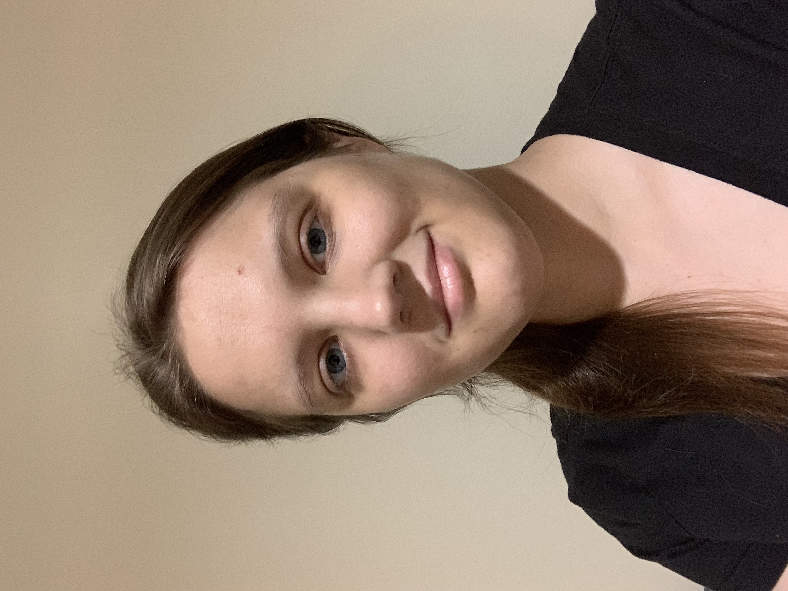

Home
Research
Teaching
Honors and Awards
Mentoring and Leadership
Links
Tracey Oellerich

Contact
E-mail:
toelleri@gmu.edu
.
Mail:
Department of Mathematical Sciences,
George Mason University
4400 University Drive, MS 3F2
Fairfax, Virginia - 22030
Office: Exploratory Hall, Room 4310.
Curriculum Vitae:
[pdf]